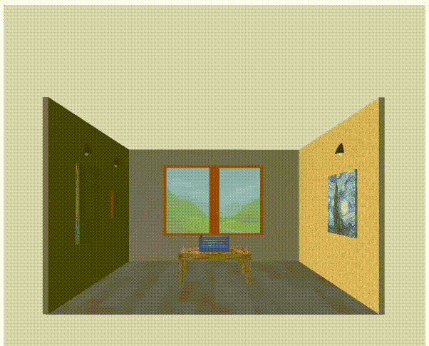
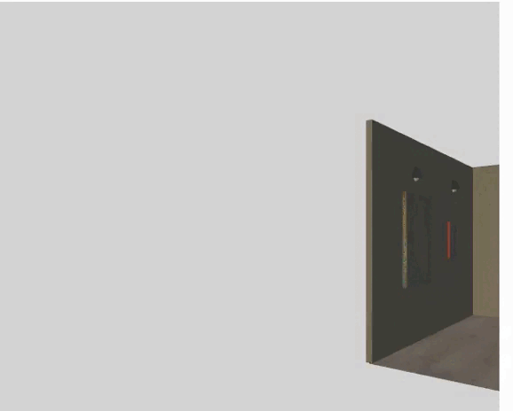
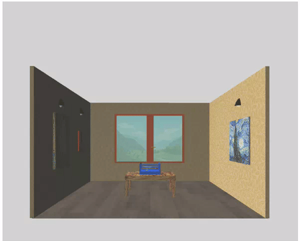
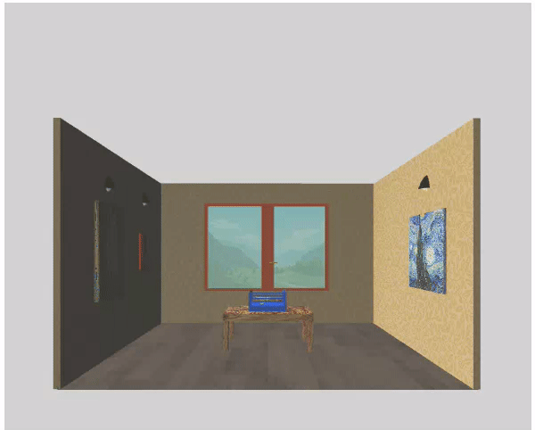
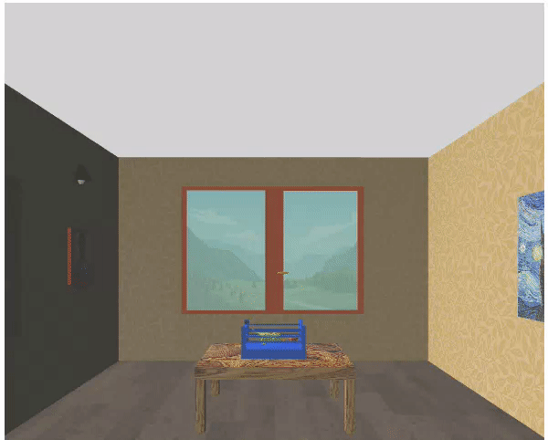

Sviluppo della scena, la directory resources
main.js
main.js è file principale nel quale vengono inizializzate tutte le variabili globali, creato il contesto 3D e 2D e avviato il rendering.
La funzione main, responsabile dell'avvio della scena, prevede la creazione di un oggetto Canvas.
L'oggetto canvas viene utilizzato dall'oggetto Model per la creazione e la visualizzazione dei modelli mesh.
Viene successivamente creato un oggetto Camera, che viene utilizzato dall'oggetto Model per la visualizzazione della scena.
Infine viene chiamata la funzione drawModel per la renderizzazione finale.
All'interno del file main vengono inizializzate le variabili utilizzate dai vari oggetti per la costruzione della scena.
Sono inoltre presenti alcune funzioni utilizzate per la gestione di eventi.
Eventi da tastiera
La funzione handleKeyboard viene utilizzata per gestire l'evento di pressione del tasto sulla tastiera associato ad un determianto movimento.Ogni qual volta l'utente preme uno dei tasti associati ad un determinato movimento, viene chiamata la funzione handleKeyboard che, in base al tasto premuto, applica un determinato movimento alla camera.
La funzione di ogni tasto è riportata nel contesto 2D attraverso un libretto delle istruzioni, in modo da facilitare l'utente alla comprensione di questi ultimi
Eventi da mouse
Le funzioni mouseDown, mouseUp, mouseMove e mouseWheel vengono utilizzate per gestire gli eventi con l'utilizzo del mouse.Vengono calcolate le coordinate del punto di pressione del mouse e utilizzate per calcolare la direzione di movimento della camera.
Eventi touch
Per quanto riguarda la gestione degli eventi touch viene utilizzato lo stesso meccanismo di gestione degli eventi con mouse, con l'unica differenza che al canvas viene fatto il bind anche dell'evento touch.Le funzioni che si occupano di effettuare questi movimenti sono touchStart, touchEnd e touchMove.
Ad ogni evento che chiama la funzione touchMove viene calcolato lo spostamento e applicato un determinato movimento alla camera.
Libretto delle istruzioni
All'interno della schermata principale del progetto viene mostrato all'utente un libretto delle istruzioni con lo scopo di facilitare l'utente alla comprensione dei vari eventi.Il libretto è stato creato utilizzato un contesto 2D, al quale è stato applicato uno sfondo che rappresenta un foglio di carta a quadretti. All'interno del libretto sono mostrati, sotto forma testuale, le istruzioni relative ai vari eventi associati ai vari tasti.
Il testo è stato creato utilizzando la funzione makeTextCanvas che utilizza un array di istruzioni, sul quale viene fatto un ciclo e ad ogni iterazione viene disegnata un'istruzione.
Camera pad
Viene inoltre fornito anche un piccolo pad caratterizzato da 4 pulsanti che permettono il movimento nelle quattro classiche direzioni: avanti, indietro, destra, sinistra all'interno della scena.Il pad viene disegnato dalla funzione makeKeyCanvas. Essendo il pad un elemento del contesto 2D, i bottoni che lo caratterizzano sono stati disegnati su di esso utilizzando la funzione drawButton.
In prima istanza viene creato un oggetto Path2D. A questo oggetto vengono assegnati determinati attributi.
All'interno di un array vengono salvati tutti i bottoni che si vogliono creare.
Viene poi iterato questo array utilizzando la funzione drawAll che chiama per ogni oggetto dell'array la funzione drawButton.
Questa funzione permette di creare dei quadrati di dimensione fissa, applicando un determinato colore e un determinato testo.

Pannello di controllo
In alto a destra, con la forma di un pannello di controllo, viene concessa inoltre la possibilità all'utente di modificare alcuni parametri per la gestione della scena.La creazione del pannello di controllo è stata effettuata utilizzando la libreria dat.gui fornita durante il corso.
Attraverso la funzione define_gui avviene la creazione di questa graphic user inteface creando l'oggetto gui.
Viene poi aggiunto all'oggetto una proprietà ed una serie di parametri che permettono poi la gestione della scena.
Viene proposta la variazione di:
- direzione della luce attraverso i parametri lx, ly, lz;
-
movimento dell'oggetto lungo gli assi x e y, permettendo la rotazione dell'oggetto, utilizzando i parametri theta e phi

-
fovy specifica l'angolo del campo visivo.
- trasparenza attraverso l'utilizzo di un checkbox. Di default il checkbox è attivato e dunque il vetro e le lampade risultano trasparenti. Al click è possibile disattivare tale proprietà.
- enable è un campo che permette di rendere attive e disponibili le funzioni del pannello di controllo. Se disattivato tutte le modifiche non avranno effetto sulla scena.
prepareCanvas.js
l'oggetto Canvas
Per la creazione del contesto 3D ho scelto di creare il Canvas, che rappresenta la finestra di rendering, come una classe.
La costruzione del modello canvas come oggetto mi ha permesso di utilizzare tutti i vantaggi di una programmazione ad oggetti.
La variabile canvas viene dichiarata nel file main.js, in scope globale, in modo da permettere poi ad ogni modello mesh di accedere a questa variabile.
Il canvas viene inizializzato nella chiamata alla funzione main.
Alla creazione dell'oggetto canvas, il costruttore crea in prima istanza il contesto webgl, e successivamente imposta il viewport, che specifica la trasformazione di x e y dalle coordinate del dispositivo alle coordinate della finestra.
Viene inizializzata una lista di mesh che verrà successivamente riempita ogni qual volta viene istanziato un oggetto Model.
Come ultimo passo viene creato il program chiamando la funzione della libreria di webGlUtils webglUtils.createProgramInfo che prende come parametri il contesto 3D e gli shader.
Per gestire correttamente la trasformazione della scena in base al restringimento della finestra, viene chiamata nel main la funzione resizeCanvasToDisplaySize
Vengono memorizzate le coordinate width ed height della finestra e si confrontano con quelle del canvas. Se sono diverse, viene chiamata la funzione resizeCanvasToDisplaySize che imposta la dimensione del canvas alla dimensione della finestra.
Model.js
l'oggetto Model
Model rappresenta la classe degli oggetti mesh.
Attraverso l'istanziazione di un oggetto della classe Model avviene la creazione di un oggetto mesh.
Nella funzione main del file main.js, dopo la creazione dei contesti 3D e 2D, viene istanziato un oggetto Model per ogni oggetto mesh che si vuole creare.
All'istanziazione dell'oggetto, vengono passati al costruttore della classe alcuni parametri utili al corretto caricamento dell'oggetto:
- il nome dell'oggetto che si sta caricando;
- il path nel quale è presente il file .obj;
- il path nel quale è presente il file .mtl;
- un array mesh che contiene tutte le informazioni sulla geometria della mesh
- un booleano per indicare se la mesh può essere ruotata.
- il contesto 3D WebGl
La funzione LoadMesh prende in input il contesto 3D WebGl e l'array mesh, che al momento della chiamata contiene il path relativo ai file .obj e .mtl.
Una volta terminato il caricamento della mesh, il nuovo oggetto viene inserito in una lista presente nell'oggetto canvas che tiene memoria di tutte le mesh create,
e successivamente viene chiamata su quest'ultimo la funzione createBuffer
createBuffer
Questa prende in input il contesto 3D WebGl e il program. Si creano i buffer per gli attributes position, normal e texcoordL'oggetto è stato preparato dunque alla fase di renderizzazione, che avviene solo successivamente alla chiamata della funzione drawModels
drawModels
Nel main, una volta settata la telecamera, avviene come ultima azione la chiamata a drawModels, che ha il compito di:- Attivare gli eventi da tastiera
- Modificare dinamicamente la dimensione del canvas in base alla grandezza della finestra
-
Iterare sulla lista delle mesh e chiamare la funzione draw sull'oggetto per la fase di rendering finale.
In questa fase viene fatto un controllo sul parametro enable del pannello di interazione illustrato nei paragrafi precedenti.
Se il parametro è true, allora la funzione draw viene chiamata con dei parametri aggiuntivi che renderanno quindi possibile la gestione dinamica di alcuni di essi.
Se il parametro è false, la funzione viene chiamata con i soli parametri formali canvas.gl e canvas.programInfo, mentre gli altri assumeranno valori forniti di default.
draw
La funzione draw si occupa di disegnare la mesh.Prende come parametri di ingresso:
- il contesto 3D WebGl
- il program
- un parametro phi che indica la rotazione della mesh in base all'asse x
- un parametro theta che indica la rotazione della mesh in base all'asse y
- fieldOfViewRadians è il valore di fov della telecamera in radianti
- zmin è il valore di distanza minima dal disegno
- far è il punto più lontano del frustum
- light_x, light_y e light_z per la direzione della luce
- trasparenza è un booleano per l'attivazione/disattivazione della trasparenza
Viene gestita la trasparenza e il collegamento tra i vari buffer.
Infine viene chiamata la drawArrays per disegnare la mesh.
camera.js
l'oggetto Camera
Come per il canvas e per il modello, anche la camera è stata gestita con l'utilizzo di una classe.
La variabile camera viene dichiarata in uno scope globale così da permettere ad ogni oggetto di accedere a questa variabile.
L'oggetto della classe camera viene istanziato successivamente alla chiamata della funzione main, al quale vengono passati come parametri la posizione, il target ed up.
La posizione rappresenta dove vogliamo che sia posizionata la telecamera, il target è la posizione dell'oggetto che vogliamo guardare.
Il costruttore della classe si occupa di inizializzare i parametri dell'oggetto position, forward, right ed up.
La position è la posizione della camera, mentre forward, right ed up sono gli assi che definiscono la direzione della camera.
Position viene inizializzato con il parametro position passato all'istanziazione dell'oggetto.
Forward viene calcolata utilizzato la libreria m4 e applicando una normalizzazione alla sottrazione dei vettori target e position.
Right, analogamente, viene calcolata con la libreria m4 e applicando una normalizzazione al cross product tra vettori forward e up.
Up, infine, viene calcolata con la libreria m4 e applicando una normalizzazione al cross product tra vettori right e forward.
All'interno della classe sono poi disponibili tutte le funzioni che permettono di modificare la posizione della camera e il suo orientamento
Le funzioni sono:
-
tilt: Permette di ruotare la telecamera verso l'alto o verso il basso.
Questo tipo di movimento è reso possibile attraverso la rotazione sull'asse right.

-
pan: Permette di ruotare la telecamera verso destra o verso sinistra.
Questo tipo di movimento è reso possibile attraverso la rotazione sull'asse up.
-
cant: Inclina una telecamera lateralmente mantenendone la posizione e direzione di visualizzazione.
Questo tipo di movimento è reso possibile attraverso la rotazione sull'asse forward. 

-
truck: Permette di spostare la telecamera lateralmente senza modificare la direzione della visuale
Questo tipo di movimento è reso possibile sommando la posizione attuale della camera al prodotto della posizione attuale con la distanza fornita, sull'asse right

-
pedestal: Alza o abbassa la telecamera sul suo asse verticale.
Questo tipo di movimento è reso possibile sommando la posizione attuale della camera al prodotto della posizione attuale con la distanza fornita, sull'asse up

-
dolly: permette di allontanarsi o avvicinarsi rispetto al punto in cui si sta guardando.
Questo tipo di movimento è reso possibile sommando la posizione attuale della camera al prodotto della posizione attuale con la distanza fornita, sull'asse forward - align: permette il riallineamento della telecamera
- getViewMatrix: restituisce la viewMatrix
-
getOriginalPosition: restituisce la posizione predefinita inizialmente della telemcamera
Si effettua il ricalcolo dell'asse forward e right andando dapprima a normalizzare la sottrazione del vettore nullo con la posizione iniziale della camera,
successivamente si calcola l'asse right come cross product, normalizzato, tra l'asse forward e l'asse up. - getPosition: restituisce la posizione della telecamera